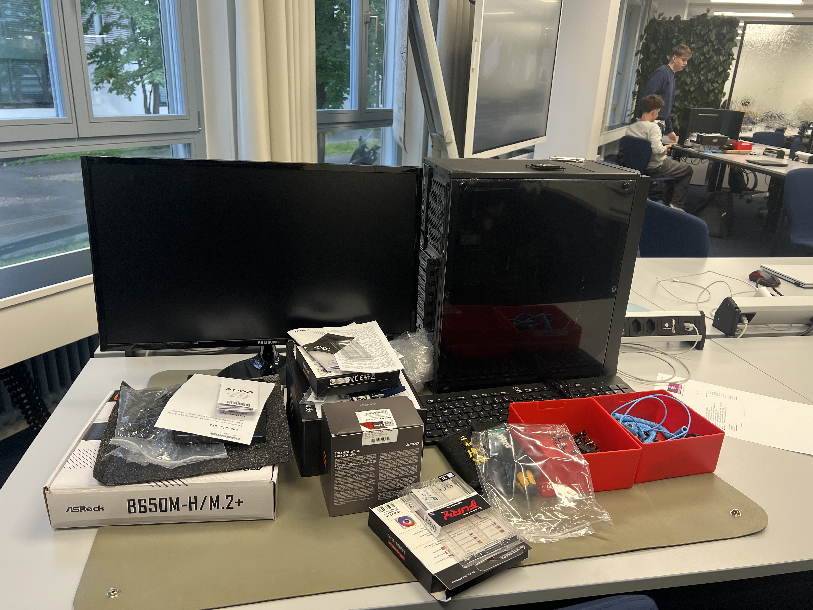

PC Komponente
Auf dem Bild sieht man einen Arbeitsplatz mit verschiedenen PC-Komponenten wie einem Mainboard, einem Prozessor, einem Gehäuse und weiteren Bauteilen, die zum Zusammenbau eines Computers benötigt werden. In diesem Projekt haben wir die einzelnen PC-Komponenten kennengelernt, einen eigenen PC zusammengebaut und wichtige Grundlagen zum Schutz vor ESD gelernt.
PC Komponente
Bevor wir die PC's zusammenbauen müssen wir zu erst alle Komponente kennenlernen und sie auch vertehen und für welche Sachen sie zuständig sind.
Meine Gruppe musste eine Präsentation über das Mainboard machen und es später anderen Präsentieren, die Präsentation sollte sehr Informationsreich sein, weil durch sie sollten die anderen das meiste über das Mainboard wissen.
Zusammenbauen von den PC's
Es machte mir sehr viel Spass einen PC zusammenzubauen, weil es etwas neues war und ich bin immer neugierig Sachen zu lernen die ich nicht kann. Es war auch ein bisschen lustig, weil alle drei Mitglieder der Gruppe haben noch nie einen PC zusammengebaut.
Fazit
Die ganze Woche beritete mir sehr viel Spass zu. Ich habe mich sehr gefreut neue Sachen zu lernen. Ich fand es sehr toll das wir in Gruppen gearbeitet haben.